新人 AI 工作 SOP
网站部署上线
面向使用 AI 但不懂代码的新手。基于新版 Cloudflare 中文界面制作，你负责点击操作，AI 负责技术判断。新增界面语言设置和 API Token 申请指南，让 AI 也能帮你自动部署。
界面设置 & 前端上线
先设置中文界面，再把网站代码连接到 Cloudflare Pages，完成构建和发布。
查看步骤 Step 02后端 D1 数据库
创建 D1 数据库，绑定到 Pages 函数，形成 Cloudflare 内部后端链路。
查看 D1 绑定 Step 03API Token & 维护
申请 API Token 让 AI 自动部署，上线后用部署记录和 AI 提示词快速排错。
查看 Token 指南一、这个 SOP 是给谁用的
当你已经有一个网站项目，代码已经上传到 GitHub 后，可以用这个 SOP 完成上线。本指南基于新版 Cloudflare 中文界面制作，每一步都有截图标注。
适合的场景
- 纯展示类网站（官网、活动页、个人主页）
- 带搜索、登录等交互功能的网站
- 工具页、落地页上线
- 想让 AI 自动帮你部署到 Cloudflare（需要 API Token）
你需要准备的账号
| 账号 | 干什么用的 | 是否必须 |
|---|---|---|
| GitHub 账号 | 存放你的网站代码 | 必须 |
| Cloudflare 账号 | 放你的网站，让用户能访问 | 必须 |
| Cloudflare D1 | 存放后端数据，和 Pages 函数配合使用 | 有后端数据时必须 |
| Cloudflare API Token | 给 AI 的操作钥匙，让 AI 自动帮你部署 | 想让 AI 自动部署时需要 |
| 代理工具（翻墙软件） | 注册和配置海外平台时需要 | 必须（见第二章） |
| AI 工具（如 TRAE） | 遇到任何困难随时问 AI | 强烈建议 |
二、网络环境说明（重要）
各平台在国内能不能打开？
| 平台 | 国内状态 | 用来干什么 |
|---|---|---|
| Cloudflare Pages | 能直接打开 | 放你的网站 |
| DeepSeek | 能直接打开 | AI 服务（如果你的网站用到了） |
| GitHub | 时好时坏 | 存代码 |
| Cloudflare 操作后台 | 建议开代理 | 配置网站部署 |
| Cloudflare D1 | 建议开代理配置 | 存放后端数据 |
| Vercel | 打不开 | 不要用这个 |
什么时候要开代理，什么时候不用？
| 你在做什么 | 要开代理吗？ | 说明 |
|---|---|---|
| 注册 GitHub / Cloudflare 账号 | 要开 | 注册时可能需要验证，不开代理可能卡住 |
| 在 Cloudflare 后台操作 | 建议开 | 开了更稳定，不容易加载失败 |
| 上传代码到 GitHub | 看情况 | 有时候能传成功，传不上去就开代理 |
| 别人访问你的网站 | 不用开 | 网站放在 Cloudflare 上，国内直接能打开 |
上传代码到 GitHub 总是失败？
如果你在上传代码到 GitHub 时经常失败，可能是网络问题。不要自己折腾网络设置，直接问 AI：
三、部署前准备
在开始部署前，确认以下内容：
- 已注册并登录 Cloudflare 账号（注册时需要开代理）
- 已有 GitHub 账号，网站代码已经上传到 GitHub 仓库
- 如果你的网站有搜索、登录等交互功能，还需要准备好后端代码的 GitHub 仓库
四、调整界面语言为中文
Cloudflare 默认界面是英文的，对于新手来说不太友好。建议第一步就把界面改成中文，这样后续操作的每个按钮你都能看懂。
登录 Cloudflare 后台
打开 https://dash.cloudflare.com/（建议开代理），登录后进入控制台首页。
点击右上角头像图标
在页面最右上角，找到你的头像/用户图标（一个小人形图标），点击它会弹出一个下拉菜单。在菜单中找到「语言」选项。
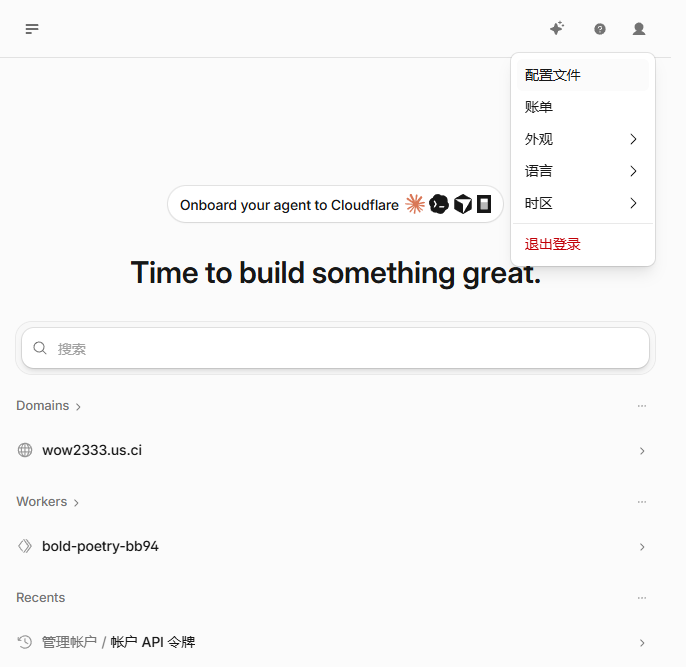
选择「语言」→「简体中文」
在下拉菜单中找到「语言」选项（如果当前是英文，显示为 Language），鼠标移上去会自动展开一个子菜单，列出所有支持的语言。选择「简体中文」即可。
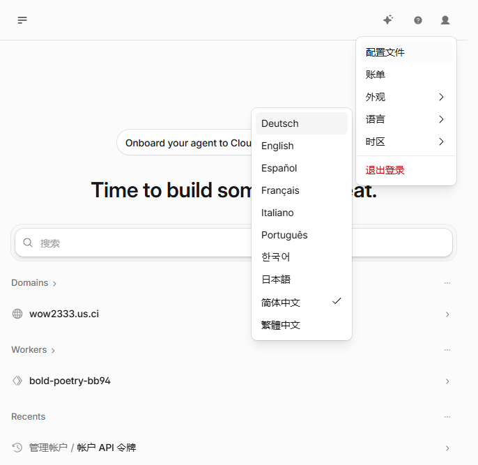
五、前端部署到 Cloudflare Pages
这是核心步骤。Cloudflare Pages 是一个免费的网站托管平台，放在上面的网站国内用户可以直接访问。本章基于新版 Cloudflare 中文界面制作。
进入 Workers 和 Pages
在左侧菜单栏中，找到「计算」分类，点击展开后选择「Workers 和 Pages」。这里是你管理所有部署项目的地方。
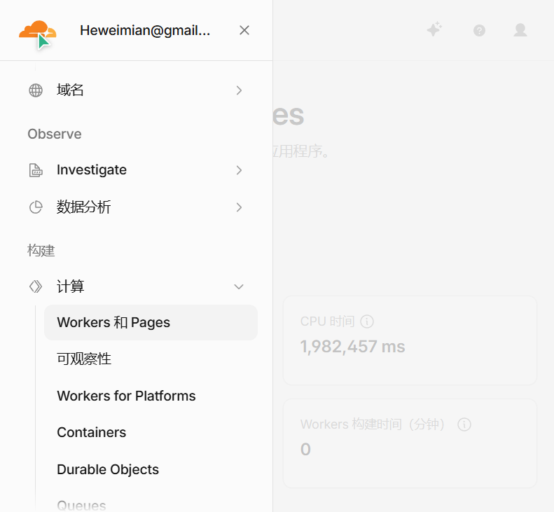
点击「创建应用程序」
在 Workers 和 Pages 页面右上角，点击蓝色的「创建应用程序」按钮。
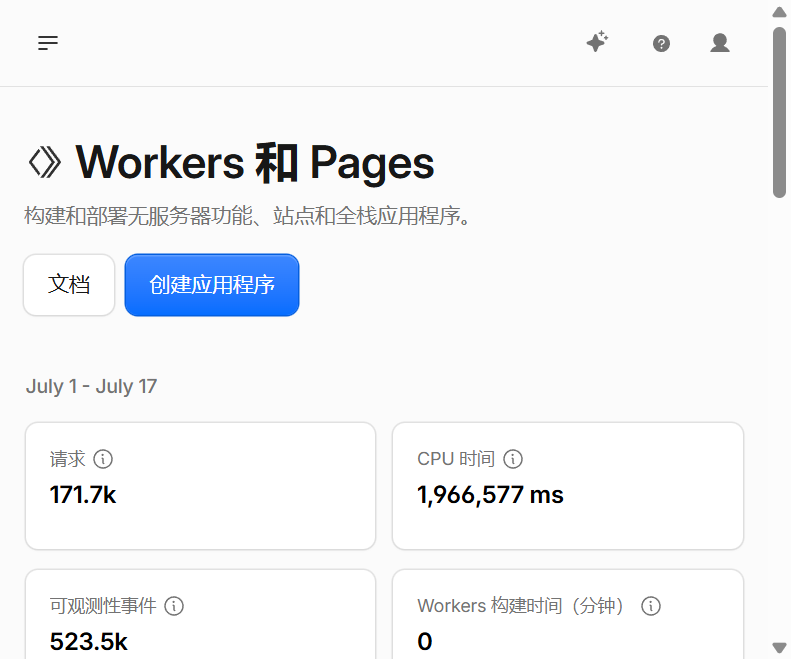
选择部署 Pages
新版的创建页面标题是"Ship something new"（发布新东西），会显示多个选项。点击第一个选项「Continue with GitHub」（用 GitHub 继续），直接进入 GitHub 仓库选择流程。
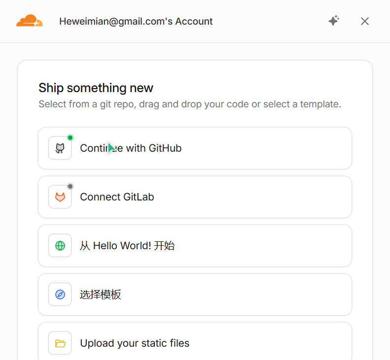
选择从 Git 导入
进入 Pages 创建页面后，你会看到两个选项。选择上方的「导入现有 Git 存储库」卡片，点击其右侧的「开始使用」按钮。这样可以从你的 GitHub 仓库直接导入代码。以后你更新了 GitHub 上的代码，Cloudflare 会自动帮你重新部署。
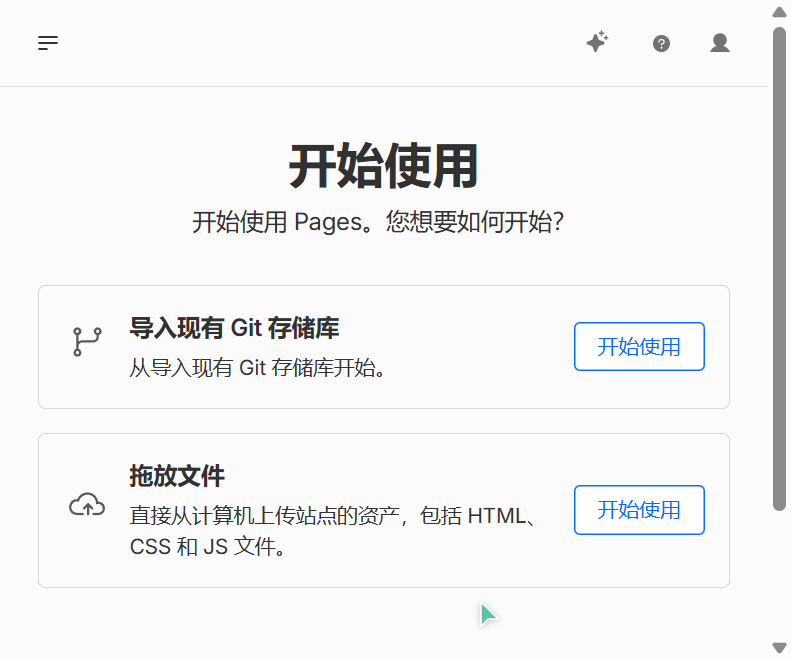
连接 GitHub 并选择仓库
首次使用需要授权 Cloudflare 访问你的 GitHub。点击「连接到 Git」，按提示完成 GitHub 授权。然后在列表中选择你要部署的仓库。仓库太多可以在搜索框输入名称搜索。
填写配置信息（不知道怎么填就问 AI）
选择仓库后会进入配置页面，需要填写项目名称、生产分支、构建命令、输出目录等。这里有术语你不需要自己判断怎么填。
点击「保存并部署」
配置完成后，点击页面底部的「保存并部署」按钮。Cloudflare 会开始自动构建你的网站。
等待部署完成
部署过程中会显示构建过程（一堆日志，看不懂没关系）。如果部署成功，会出现成功提示，并展示一个 .pages.dev 网址。
找到正式网站地址
部署成功后，在项目详情页的「部署」标签页中，可以看到你的网站地址：
https://你的项目名.pages.dev
这个地址就是正式访问地址，可以分享给任何人。
xxx.pages.dev 是对外分享用的；还有一种带随机前缀的地址（比如 4601e4a2.xxx.pages.dev）是某次部署的预览链接，一般不用管。对外分享用正式地址。
六、后端部署到 Cloudflare D1
你要完成的事：先创建一个 D1 数据库，再回到当前 Pages 项目，在设置 → 函数 → 绑定中添加 D1 数据库绑定。
操作步骤
进入 D1 数据库页面
在 Cloudflare 控制台左侧菜单中，找到「存储和数据库」分类，点击「D1 SQLite 数据库」进入 D1 管理页面。这里可以看到你已有的数据库列表。
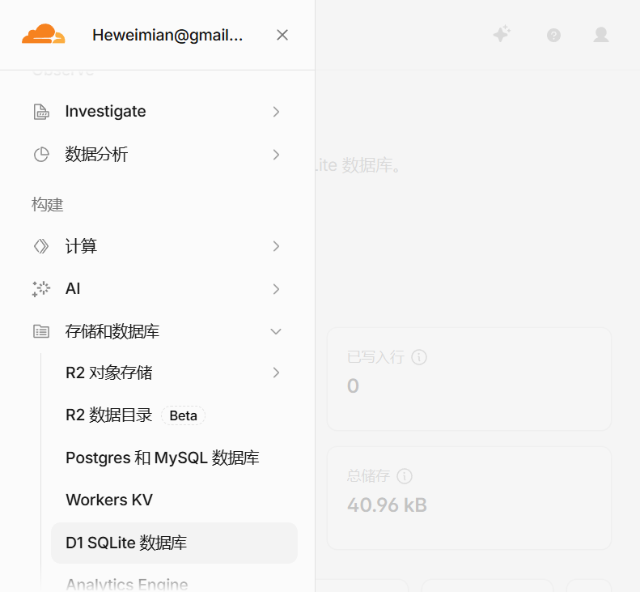
点击三点菜单 → 创建数据库
在 D1 数据库页面，点击右上角的三点菜单（⋯），在弹出的菜单中选择「创建数据库」。如果页面直接显示了「创建数据库」按钮，直接点击即可。
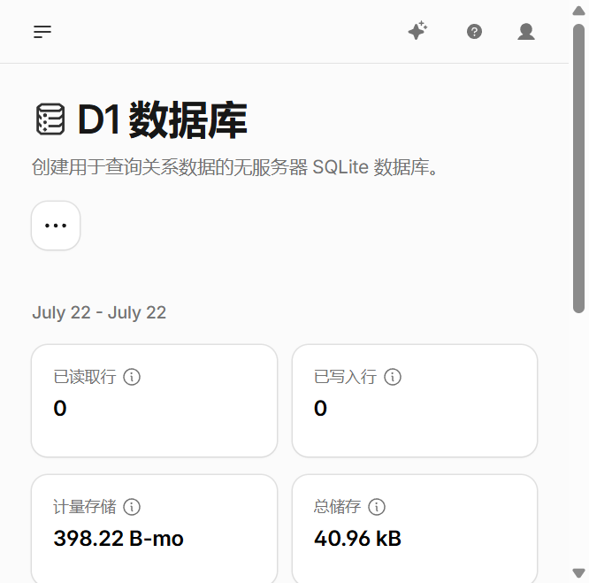
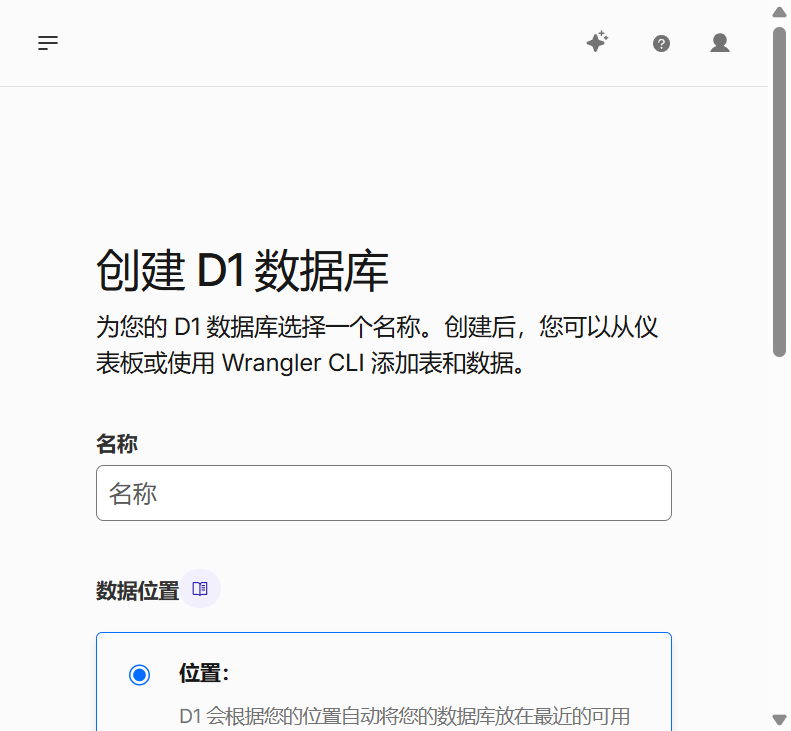
填写数据库名称
输入数据库名称（建议用项目名或业务名，比如 zhixin-logs），位置保持默认（让 Cloudflare 自动选择），点击创建。
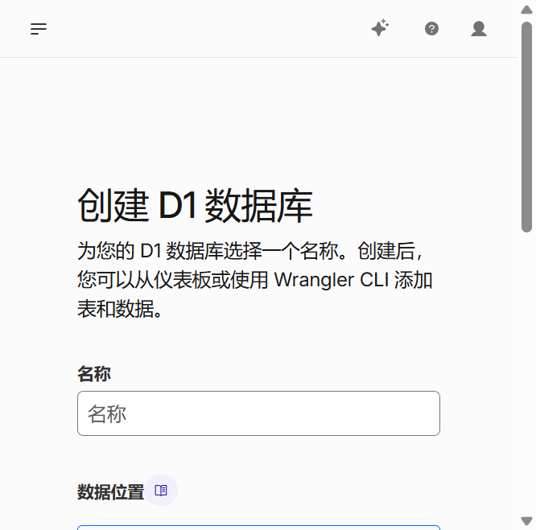
确认数据库创建成功
创建完成后，D1 数据库列表里会出现新的数据库记录。点击数据库名称进入详情页，可以看到数据库 ID，后面绑定时可能需要用到。
回到 Pages 项目设置
回到 Workers 和 Pages 列表，点击你的网站项目进入详情页。切换到「设置」标签页，找到「函数」区域下的「绑定」。
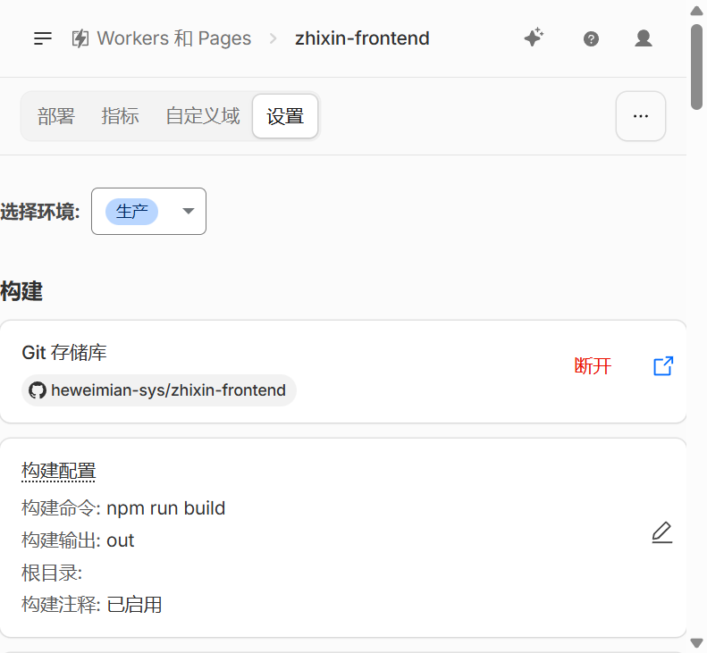
添加 D1 数据库绑定
在绑定区域点击「添加」，选择绑定类型为「D1 数据库」（不要选 KV、R2 或其他类型）。
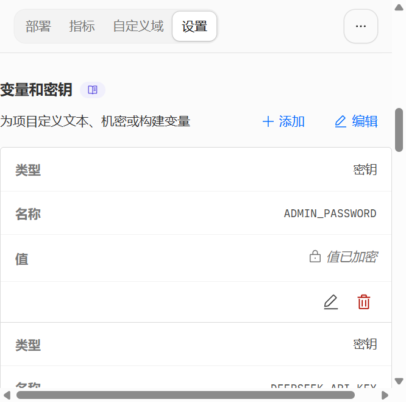
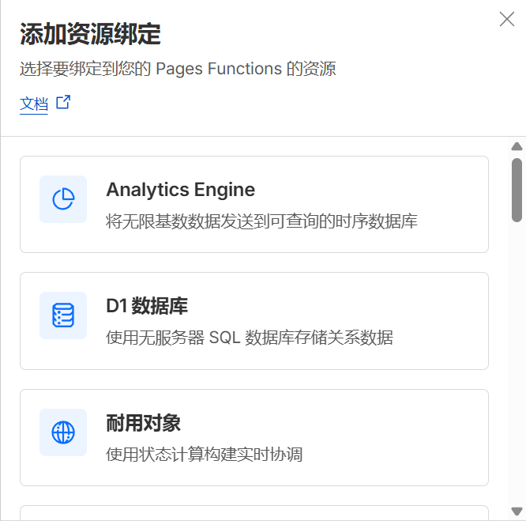
- 变量名：填写后端代码约定的名称（问 AI 你的代码里用的是什么名称）
- D1 数据库：选择刚创建的数据库
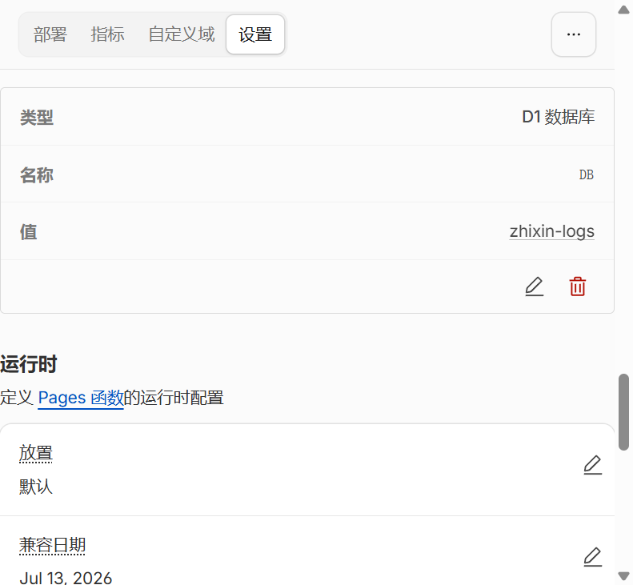
填写完成后点击「保存」。
重新部署
保存绑定配置后，需要重新部署一次 Pages 项目才能生效。在「部署」页面点击「重试部署」或推送一次代码到 GitHub 触发自动部署。
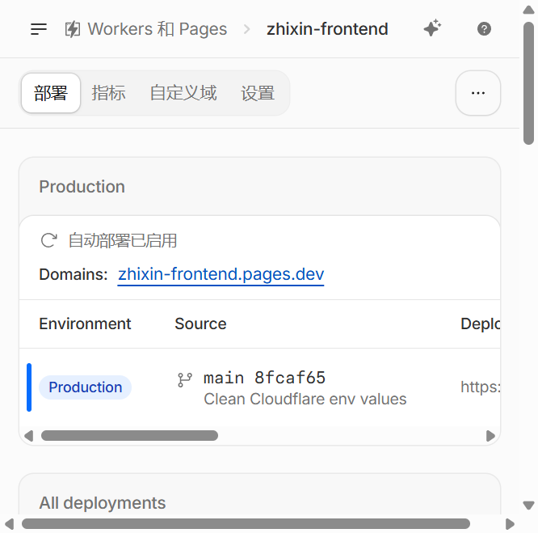
绑定完成后检查
| 检查项 | 正确结果 |
|---|---|
| D1 数据库 | Cloudflare 控制台里能看到刚创建的数据库 |
| Pages 绑定 | Pages 项目的「设置 → 函数 → 绑定」里已添加 D1 数据库 |
| 变量名 | 绑定变量名必须和后端函数代码里读取的名称一致 |
| 重新部署 | 保存配置后，重新部署或触发一次 Pages 构建 |
七、申请 Cloudflare API Token
简单理解：API Token = 给 AI 的 Cloudflare 操作权限
申请前的准备
- 已登录 Cloudflare 账号
- 建议开代理，确保 Cloudflare 后台稳定加载
- 准备好一个记事本，用来保存 Token（创建后只显示一次！）
操作步骤
进入 API 令牌页面
在 Cloudflare 控制台左侧菜单中，找到「帐户 API 令牌」（通常在菜单底部的「管理帐户」分类下）。也可以通过点击右上角头像 → 在菜单中找到相关入口。
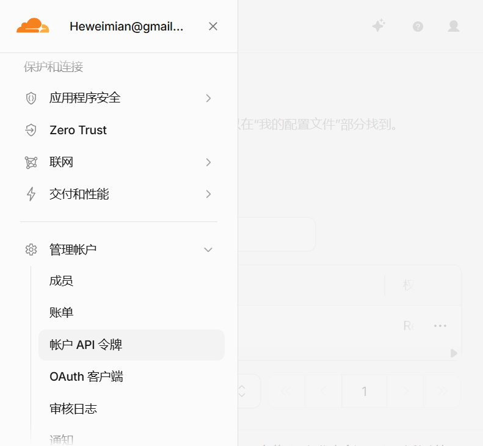
点击「创建令牌」
在 API 令牌页面，点击右上角的「创建令牌」按钮，进入令牌配置页面。
配置令牌信息
在令牌创建页面，需要填写以下信息：
- 令牌名称：起一个你认得出的名字，比如"给 AI 部署用"
- 权限策略：选择「自定义」（Custom）
- 权限：选择以下权限（让 AI 能部署网站和管理数据库）：
- 帐户 → Cloudflare Pages → 编辑
- 帐户 → D1 → 编辑
- 范围：选择「整个帐户」（这样 AI 可以操作你帐户下的所有项目）
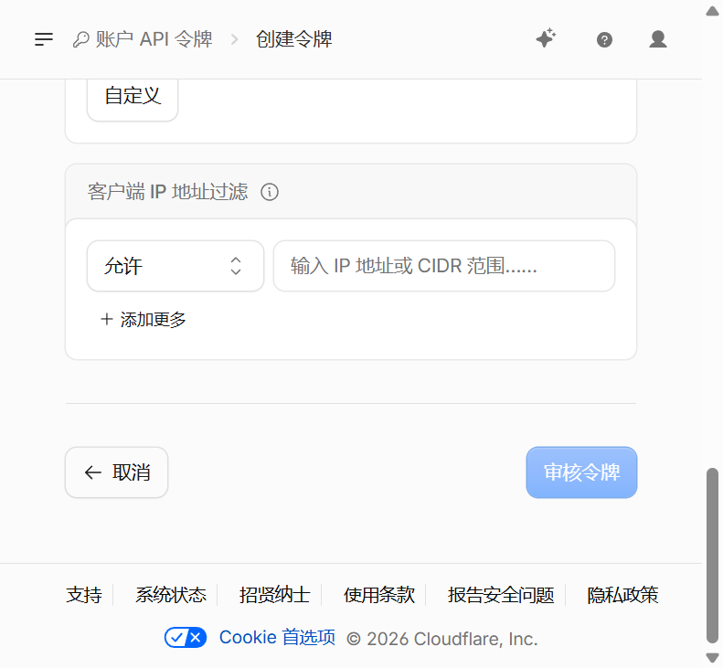
审核令牌 → 创建
配置完成后，点击页面底部的「审核令牌」按钮（新版 Cloudflare 界面的按钮名称），进入令牌摘要确认页面。确认权限设置正确后，点击「创建令牌」。

复制并保存 Token（最重要的一步！）
c 开头的长字符串，类似 c5f3a2b8e9d1...（约40-50个字符）。如果你看到的字符串不是 c 开头的，可能复制错了内容。
如何使用 API Token
把 API Token 告诉 AI 助手，AI 就可以通过它帮你自动部署网站到 Cloudflare。
Token 管理小贴士
| 事项 | 说明 |
|---|---|
| Token 丢失了 | 没法找回，只能删除旧 Token 重新创建一个 |
| 不再需要了 | 回到 API 令牌页面，点击删除，立即生效 |
| 怀疑泄露了 | 立即删除该 Token，再创建一个新的 |
| 权限不够 | 删除旧 Token，创建一个权限更大的新 Token |
| 可以创建多个 | 可以为不同用途创建不同 Token，方便管理 |
八、部署后检查事项
网站上线后，不要只看 Cloudflare 显示成功，还需要自己打开网站检查一遍。
检查清单
- 打开正式网站地址，确认页面能正常打开
- 检查首页内容是否显示正常（文字、图片有没有错位）
- 检查按钮、链接、图片是否能正常点击和显示
- 用手机打开网站地址试试（很重要！）
- 如果网站有搜索功能，试试搜索能不能用
- 如果网站有表单，试试能不能提交
九、遇到问题怎么办
问题 1：在 Cloudflare 找不到 GitHub 仓库
原因：Cloudflare 没有获得你 GitHub 仓库的访问权限。
解决：点击页面底部的授权链接，跳转到 GitHub 重新勾选目标仓库授权，保存后回到 Cloudflare 刷新。
问题 2：部署失败了（显示红色）
原因：可能是配置填错了、代码有问题、或者依赖文件冲突。
解决：不要反复点击重新部署！把构建日志里的红色报错信息复制发给 AI：
问题 3：部署成功但页面是空白的
原因：通常是配置里的"输出目录"填错了。
解决：把你的 GitHub 仓库地址发给 AI，问 AI"输出目录应该填什么"，然后去 Cloudflare 修改配置重新部署。
问题 4：网站能打开但搜索/功能用不了
原因：可能是 Pages 函数没正常运行，或者 D1 绑定变量名和代码不一致。
解决：
- 去 Cloudflare Pages 项目里检查 设置 → 函数 → 绑定
- 确认 D1 数据库已绑定，并且变量名和后端代码一致
- 保存配置后重新部署，再把浏览器报错和函数日志发给 AI
问题 5：Cloudflare 显示 522 错误
原因：可能是网站还在构建中，或者构建失败了。
解决：去 Cloudflare 控制台「部署」页面看看构建状态。如果显示红色（失败），按问题 2 的方法处理。
问题 6：API Token 不起作用
原因：可能是权限不够，或者 Token 已过期/被删除。
解决：回到 API 令牌页面检查 Token 是否还存在。如果权限不够，删除旧 Token 重新创建一个权限更大的（确保包含 Pages 编辑和 D1 编辑权限）。
十、给 AI 的提问模板
整个部署过程中，遇到任何不确定的地方，都可以用以下模板问 AI。记住一个原则：信息越详细，AI 回答越准。
十一、后续维护
更新网站内容
如果你修改了网站代码（或让 AI 帮你改了），只需要把新代码推送到 GitHub，Cloudflare 就会自动重新部署。不需要手动操作。
用 API Token 让 AI 自动更新
如果你已经有 API Token，可以直接让 AI 帮你完成从代码更新到部署的全过程：
查看网站状态
- Cloudflare：控制台 → Workers 和 Pages → 点你的项目 → 部署 看每次部署是否成功（绿色=成功，红色=失败）
- Cloudflare 函数：Pages 项目 → 函数 查看函数日志和构建状态
查看网站访问数据
Cloudflare 自带免费的数据统计功能：
- 控制台 → 点你的项目 → 分析 标签
- 可以看到：访问次数、访客数量、流量来源、访问者国家分布等
回退到旧版本
如果新版本有问题，可以回退到之前能用的版本：
- Cloudflare：部署页面 → 找到之前显示绿色的那次构建 → 点击「提升到生产环境」
API Token 安全管理
- 定期检查 API 令牌页面，不需要的 Token 及时删除
- 如果 Token 怀疑泄露，立即删除并重新创建
- 不要在公开场合（微信群、论坛）分享 Token
- 可以为不同用途创建不同 Token，方便管理
十二、流程总结
第一步：设置中文界面（建议首先做）
- 登录 Cloudflare → 点击右上角头像 → 「语言」→ 选择「简体中文」
- 界面立即切换为中文，后续操作更轻松
第二步：前端部署（必须）
- 左侧菜单「计算」→「Workers 和 Pages」→ 点「创建应用程序」
- 点击「Continue with GitHub」（或滚动到底部点「想要部署 Pages？开始使用」）
- 选「导入现有 Git 存储库」→ 连接 GitHub → 选择仓库
- 填写配置信息（不知道怎么填就问 AI）
- 点「保存并部署」→ 等待构建完成
- 复制
xxx.pages.dev网站地址
第三步：后端部署（有搜索/登录等功能时需要）
- 左侧菜单「存储和数据库」→「D1 SQLite 数据库」
- 点击三点菜单（⋯）→「创建数据库」→ 输入名称 → 创建
- 回到 Pages 项目 → 设置 → 函数 → 绑定
- 添加 D1 数据库绑定，变量名和代码保持一致
- 保存配置后重新部署 Pages 项目
第四步：申请 API Token（想让 AI 自动部署时需要）
- 左侧菜单找到「帐户 API 令牌」
- 点击「创建令牌」→ 填写名称 → 选择权限（Pages 编辑 + D1 编辑）
- 范围选「整个帐户」→ 创建
- 立即复制保存 Token（只显示一次！）
- 把 Token 给 AI，AI 就能帮你自动部署
三个重要地址（记好）
| 名称 | 地址格式 | 用来干什么 |
|---|---|---|
| 网站地址 | https://xxx.pages.dev | 分享给用户访问 |
| D1 绑定名 | DB 或你的代码约定名称 | 告诉 AI，用来核对函数代码 |
| API Token | 一串很长的字符 | 给 AI 用，让它自动部署 |
记住这些原则
- 先改中文界面，操作起来更轻松
- 网站部署选 Pages，不要选 Worker
- 找不到 GitHub 仓库，去检查授权
- 不知道配置怎么填，不要瞎填，问 AI
- 部署成功不等于网站没问题，要自己打开检查
- 对外分享用
xxx.pages.dev正式地址 - 遇到失败，先复制报错信息问 AI，不要反复点击部署
- API Token 就像密码，只给信任的 AI 工具，不要公开
- 你不是一个人在战斗：技术的事交给 AI，你负责点击和判断